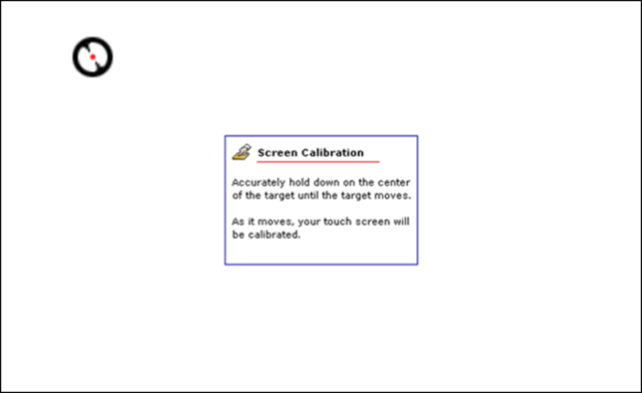
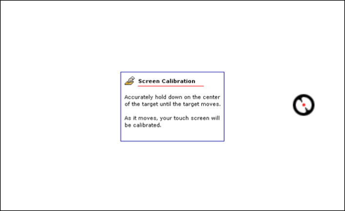
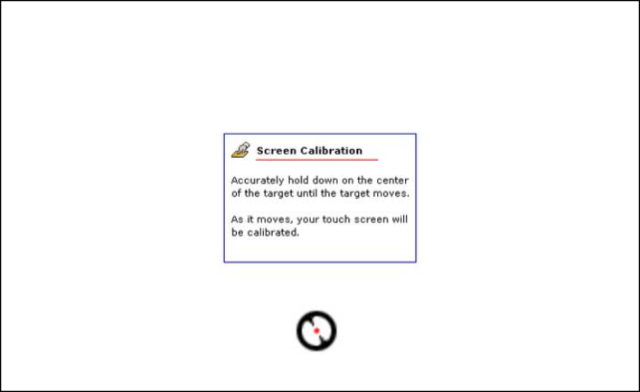
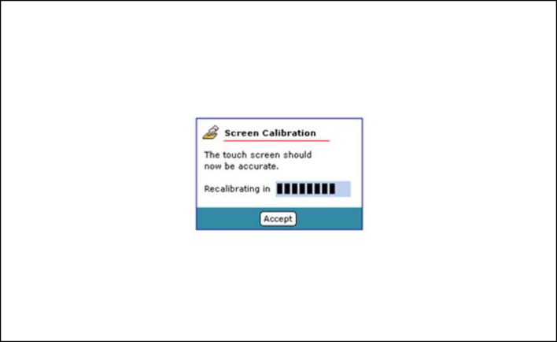

Calibrate a touchscreen
This utility can only be used on resistive touch displays. If your touch display is capacitive,
refer to the Calibrating touch section of this guide.
Syntax:
calib-touch [-config-file=config_file]
[-display=display_id]
[-exit-on-timeout]
[-format=pixel_format]
[-interval=swap_interval]
[-pos=x,y]
[-recalibrate]
[-sample-limit=sample]
[-size=widthxheight]
[-verbose=level]
[-zorder=zorder]
Options:
- -config-file=config_file
- Set an alternative configuration filename, as a string (default is
/etc/system/config/calib.hostname).
This calibration tool requires access to write a configuration file. If
/etc/system/config is on a read-only filesystem,
then you will need to specify a different path and filename so that
calib-touch has permissions to write the
configuration file.
- -display=display_id
-
Specify which display the window will appear on by using display_id.
You can specify display_id as one of the following:
- an integer that identifies the display
-
an ID string that identifies the name of the display (id_string)
Whether by integer or by string, the display that you specify using display_id must be one of the displays
that you've configured in the display
subsections of the winmgr section in your configuration file (e.g., graphics.conf).
If you don't have any display subsections
configured, or if you don't specify the display option, then calib-touch uses the default display.
- -exit-on-timeout
- Exit this application after 5 seconds of inactivity on each calibration screen, or 30 seconds of inactivity on the final calibration screen. Otherwise, the application restarts the calibration procedure.
- -format=pixel_format
-
Set the pixel format, as a string, of the window (default is the pixel format assigned by
Screen Graphics Subsystem). The pixel format can be one of
the following strings:
- -interval=swap_interval
- Set the swap interval, as an integer (default is 1). The swap interval is the
minimum number of vsync periods between image updates.
- -pos=x,y
- Set the position, using integer x and y coordinates, of the viewport (default is 0, 0).
- -recalibrate
- Perform a calibration despite the existence of a calibration file. The
existing calibration file will be overwritten. You may need to recalibrate
if you make any changes related to the touch device (e.g., changing your
display or display resolution).
- -sample-limit=sample
- Set the number of samples, as an integer, for each target (default is 10).
- -size=widthxheight
-
Set the size, using integer values for width and height, of the viewport (default is fullscreen).
- -verbose=level
- Set the verbosity level, as an integer (default is 0).
- -zorder=zorder
- Set the z-order, as an integer, of the window (default is 0).
Description:
The calib-touch utility is a command-line tool that's used to
calibrate a touchscreen. Once the touchscreen is successfully configured, the
calib-touch utility saves a configuration file at
/etc/system/config/calib.hostname.
Prior to starting the touch calibration, ensure that you have an appropriate
begin mtouch section in your /etc/system/config/mtouch.conf
file to define your touch device.
To run the calibration tool:
- Ensure that screen is running.
- Ensure that mtouch is running.
- Run calib-touch from either your starup script or from a shell.
- Touch the bull's-eye targets on each of the display screens.
- Touch the Accept button to finish calibration.
You can use the Esc key to exit the calibration tool at any time.
Examples:
Calibrate for fullscreen:
calib-touch
Figure 1. First calibration screen

Figure 2. Second calibration screen

Figure 3. Third calibration screen

Figure 4. Final calibration screen
